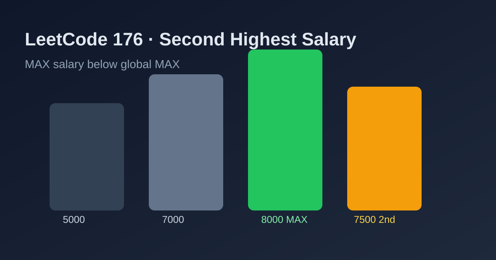

LeetCode 176: Second Highest Salary (MAX Below Global MAX)
LeetCode 176SQLAggregationToday we solve LeetCode 176 - Second Highest Salary.
Source: https://leetcode.com/problems/second-highest-salary/

English
Problem Summary
Given an Employee table, return the second highest distinct salary. If no such salary exists, return null.
Key Insight
The second highest distinct salary is simply the maximum salary among values strictly smaller than the global maximum salary.
SQL Strategy
- Find global max salary.
- Filter rows where salary is less than that max.
- Take MAX(salary) from the filtered set.
- Alias result as SecondHighestSalary.
Complexity Analysis
Time: O(n) scan-level aggregation (ignoring indexing engine internals).
Space: O(1) extra.
Common Pitfalls
- Forgetting distinctness and accidentally treating duplicate max salaries as first/second.
- Using ordering with offset but not handling missing second salary correctly.
- Returning no row instead of null when a second value does not exist.
Reference Implementations (Java / Go / C++ / Python / JavaScript)
SELECT MAX(salary) AS SecondHighestSalary
FROM Employee
WHERE salary < (SELECT MAX(salary) FROM Employee);SELECT MAX(salary) AS SecondHighestSalary
FROM Employee
WHERE salary < (SELECT MAX(salary) FROM Employee);SELECT MAX(salary) AS SecondHighestSalary
FROM Employee
WHERE salary < (SELECT MAX(salary) FROM Employee);SELECT MAX(salary) AS SecondHighestSalary
FROM Employee
WHERE salary < (SELECT MAX(salary) FROM Employee);SELECT MAX(salary) AS SecondHighestSalary
FROM Employee
WHERE salary < (SELECT MAX(salary) FROM Employee);中文
题目概述
给定 Employee 表，返回第二高的不同工资。如果不存在第二高工资，返回 null。
核心思路
第二高工资就是：在所有小于“全局最高工资”的记录里，再取一次最大值。
SQL 方案
- 先求全局最高工资。
- 过滤出小于该最高值的工资。
- 在过滤结果上取 MAX(salary)。
- 结果别名为 SecondHighestSalary。
复杂度分析
时间复杂度：O(n) 级别聚合扫描（不考虑数据库引擎内部优化）。
空间复杂度：O(1) 额外空间。
常见陷阱
- 忽略“不同工资”要求，把重复最高工资误当成第一和第二。
- 用排序+偏移时未正确处理不存在第二高工资的情况。
- 无第二高工资时返回空结果集，而不是 null。
多语言参考实现（Java / Go / C++ / Python / JavaScript）
SELECT MAX(salary) AS SecondHighestSalary
FROM Employee
WHERE salary < (SELECT MAX(salary) FROM Employee);SELECT MAX(salary) AS SecondHighestSalary
FROM Employee
WHERE salary < (SELECT MAX(salary) FROM Employee);SELECT MAX(salary) AS SecondHighestSalary
FROM Employee
WHERE salary < (SELECT MAX(salary) FROM Employee);SELECT MAX(salary) AS SecondHighestSalary
FROM Employee
WHERE salary < (SELECT MAX(salary) FROM Employee);SELECT MAX(salary) AS SecondHighestSalary
FROM Employee
WHERE salary < (SELECT MAX(salary) FROM Employee);
Comments